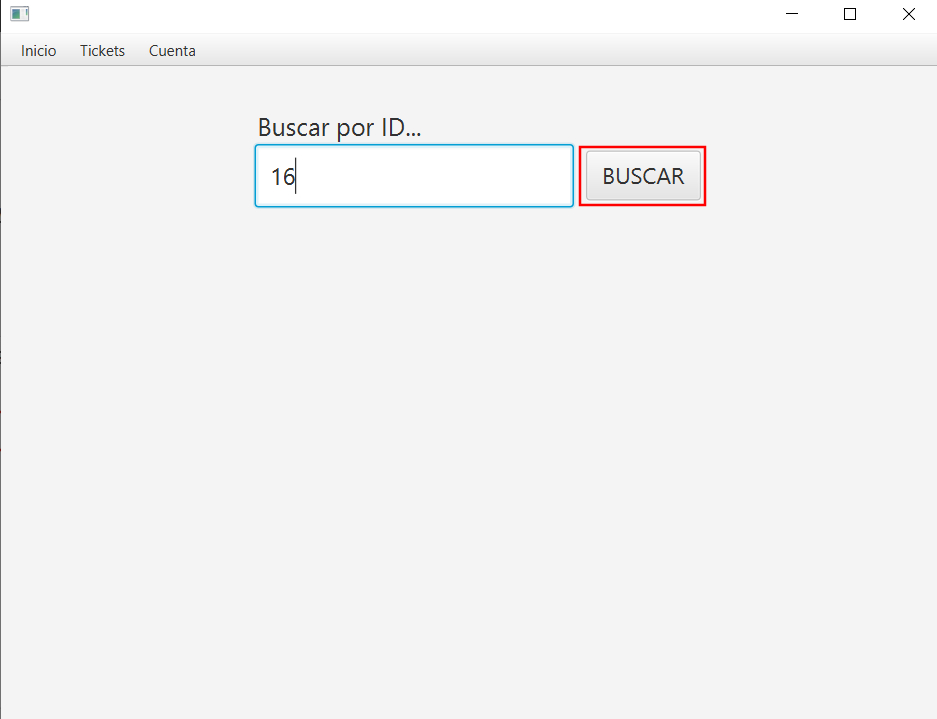

MANUAL DE USO TICKETMASTER
Pulsa aquí si quieres ir directamente al apartado para tecnicos.
MANUAL PARA USUARIOS
INICIAR SESION
Con las credenciales que te habrá proporcionado la empresa (usuario / contraseña), podras iniciar sesion.
INICIO
En la pagina de inicio, podremos observar nuestro nombre, un menú de navegación, y un listado de todos nuestros tickets.
Si necesitasemos, en todo momento tenemos en el menú, la opcion de volver aquí.

CREACION DE UN TICKET
Para crear un ticket, nos basta con ir a "Tickets" y pulsar el boton "Crear Ticket"

Tendremos que rellenar todos los datos, tales como titulo, descripcion y prioridad, y despues seleccionamos "Crear Incidencia".
Y listo, podremos comprobar en la pagina de inicio, que se nos ha añadido un nuevo ticket.
VISUALIZAR/MODIFICAR TICKETS
Esta vez seleccionamos "Ver ticket", para poder acceder al buscador.
En el buscador, podemos buscar por ID de ticket. Para consultar la ID, en la pagina principal aparece en la parte izquierda de cada ticket.
Ahora nos aparece toda la informacion sobre el ticket. Para modificarlo, pulsaremos el boton de "Modificar Incidencia".
Cuando hayamos terminado de modificar el ticket, pulsaremos el boton de "Confirmar".
CONSULTAR / MODIFICAR USUARIO
Para consultar nuestro usuario, pulsaremos el boton de "Ver Cuenta".
Si nos interesa modificar algun dato, pulsaremos el boton de "Modificar Usuario".
Se habilitarán las casillas, y podremos editar nuestros datos. Para confirmar, pulsamos "Guardar Cambios"
Confirmamos y listo.
CERRAR SESION
Para cerrar sesion, pulsaremos el boton de "Cerrar Sesion", debajo de "Ver cuenta".

MANUAL PARA TECNICOS
INICIAR SESION
Para iniciar sesion, con nuestras credenciales (usuario/contraseña), tendremos que dirigirnos a la parte inferior de la pantalla, donde aparece "Eres tecnico? Iniciar Sesion".
Como diferencia con un usuario normal, encontraremos que tenemos una lista de todos los tickets pendientes, y que en el menú nos aparece una nueva opcion.
TICKETS
Para la creación y modificacion véase la guia de usuario, ya que son los mismos pasos. Como tecnico, tienes una opción añadida en "Modificar Incidencia", que permite asignarte la incidencia, para poder trabajar en ella.
CREAR USUARIOS
Para crear un usuario, nos vamos al menú - Usuarios - Crear Usuario
En esta seccion, rellenaremos todos los datos, y pulsaremos el boton de "Crear Usuario".
ELIMINAR USUARIOS
En el apartado "Eliminar usuario", debajo del anterior, encontraremos un buscador. Escribimos el nombre de usuario de la cuenta que queremos eliminar, y le damos al boton de buscar, situado a la derecha. Si aparecen sus datos, está listo para eliminar. Pulsamos el boton, y hecho.